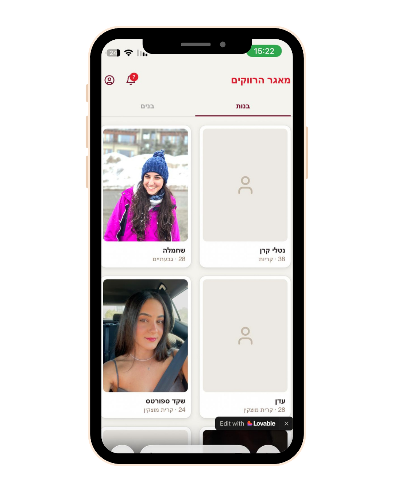
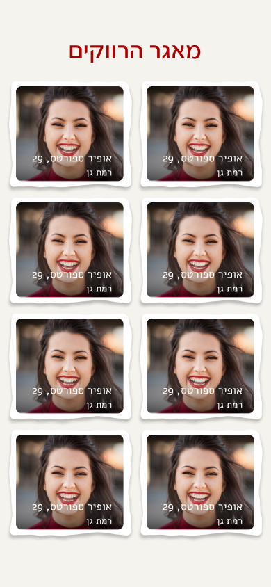
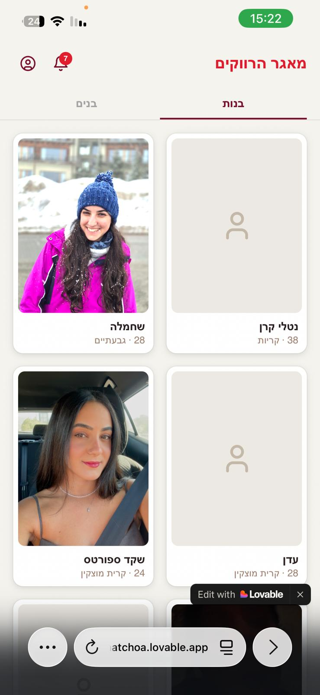
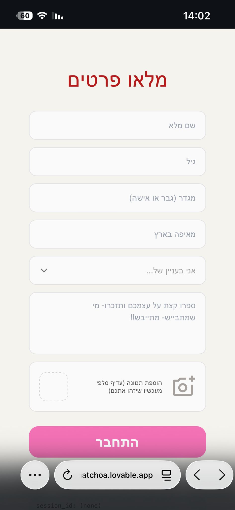
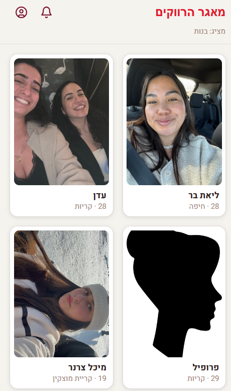
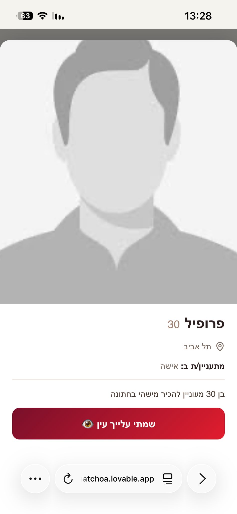
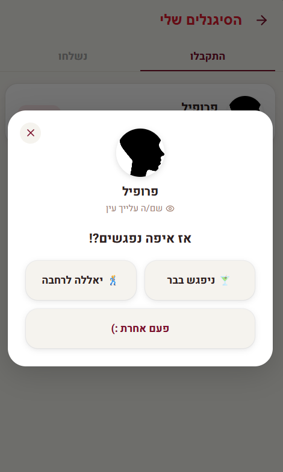

MVP · AI Project · WedMatch
An AI-based app designed to help singles connect naturally at weddings - turning mutual social circles into real, in-person introductions.

Overview
My friends and I have been to a lot of weddings. At every single one, there were interesting people in the room - people we didn't know how to approach. Not because we weren't interested. Because we didn't know if they were single. And neither did they.
Dating apps solve discovery. But they can't solve the moment you're already in the same room with 200 mutual connections, with no way to break the ice without risking embarrassment.
WedMatch isn't a dating app. It's a tool that removes one specific barrier - so the real connection can happen in person.
The Problem
Weddings bring together large social circles, yet guests often have no easy way of knowing who else is single or open to meeting someone. The opportunity is right there - but the social friction makes it feel impossible.
How Might We
How might we help singles connect with each other at weddings in a world dominated by dating apps?
The Idea
An app that gathers all single guests in one place, helps them discover each other, and gives them one small nudge - not a chat window, but a meeting point. The platform runs on signals: a simple tap to express interest, a quick response, and a physical location to meet. No long messages. No endless swiping. Just the moment.
Working Process
I first designed the user flow and key screens in Figma to define the experience. After finalizing the UI structure, I used Lovable to transform the designs into a working web app by guiding it with structured prompts - keeping the build aligned with the original design intent.


"Build a Hebrew web application with Lovable Cloud. Define two tables: Users (bio, interests, images) and Signals (matching logic). Implement authentication and client-side routing. Constraint: No open chat - focus on 1-tap responses to encourage physical interaction."
Key Screens
A 30-second registration to ensure guests stay in the moment. Name, photo, and a few interests - no lengthy forms, no unnecessary friction. The goal: get guests into the app before the cocktail hour ends.
30-second entry - guests stay present
Visual-first layout that highlights shared interests, making it easier to identify potential connections in a crowded room. Large profile cards with shared interests surfaced at a glance - before a word is spoken.
Visual-first - shared interests first
When someone catches your eye in the guest directory, you can send a discreet signal to test the interest. Low-pressure, anonymous until accepted - no direct approach required, no awkward eye contact.
Discreet interest - anonymous until accepted
No open chat. When you receive a signal, you get focused response options that lead directly to a physical meeting point. The interaction moves from the screen to the room - fast. No long text threads keeping guests from the dance floor.
1-tap response - back on the dance floor
Design Decisions
A traditional chat feature would trap guests in their phones - the opposite of what a wedding is for. By removing chat entirely and replacing it with 1-tap responses that lead to a physical meeting point, I kept the app as a bridge to the real world, not a destination in itself.
-> Keep guests at the wedding, not on their phones.At a wedding, people have exactly the right amount of attention to spare during cocktail hour. A long onboarding kills the moment. I designed the registration to take under 30 seconds - just enough to create a real presence in the feed without asking guests to stop being guests.
-> Friction-free entry means more guests actually join.Weddings happen under dim lighting - candles, dance floors, outdoor evenings. I chose a high-contrast palette of bold pink and deep backgrounds specifically because it stays legible and glanceable when the light is low and your phone screen is at 40% brightness.
-> Design for the dance floor, not the office.The language is playful, direct, and informal - designed to mirror the celebratory atmosphere of a wedding. By using high-energy Hebrew phrasing, I lowered the social friction and made the interaction feel like a natural part of the party rather than a formal process.
-> Sound like a friend at the party, not a dating app.Final Outcome
WedMatch started from a real observation within my own social circle, where guests struggled to identify who was single at social events. I tested it at my own wedding, gathered feedback from real users, and refined the experience based on what actually worked in the room. The result is a product that respects the occasion, respects the user's time, and moves people from screens to conversations.
Back to Portfolio
← All ProjectsNext Project
Memore →